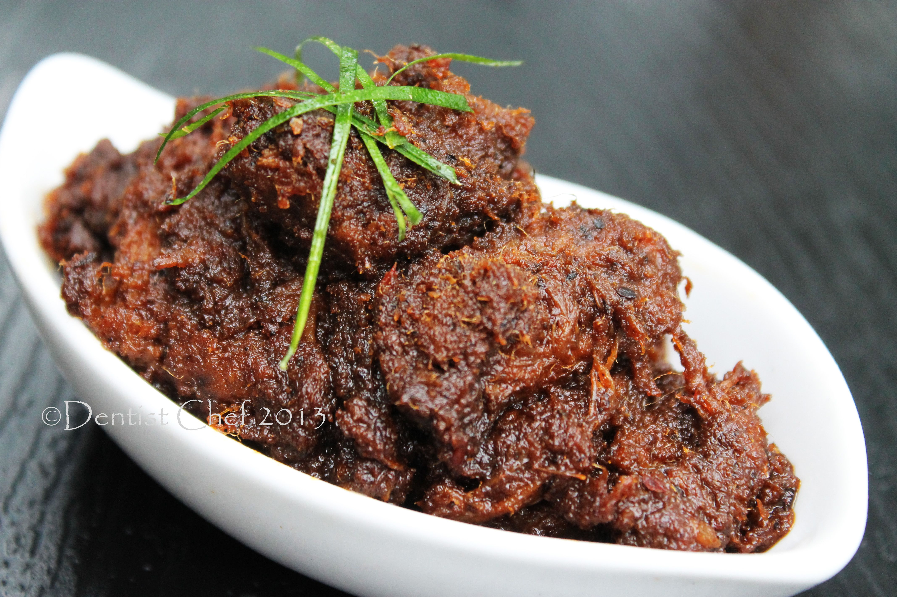

Rendang: Masakan Terlezat di Dunia

Asal: Minangkabau, Sumatera Barat
Kategori: Masakan Kering / Berbumbu
Waktu Memasak: ±4–6 Jam
Rendang adalah masakan berbahan dasar daging yang dimasak dengan santan dan rempah-rempah pilihan khas Minangkabau, Sumatera Barat. Dengan proses memasak yang lama dan cermat, rendang menghasilkan cita rasa yang kaya, kering, dan aromatik.
CNN Travel pernah menobatkan Rendang sebagai makanan nomor satu terlezat di dunia. Perpaduan rempah seperti lengkuas, serai, kunyit, cabai, dan santan kelapa menciptakan harmoni rasa yang tidak tertandingi. Rendang tahan lama dan semakin lezat seiring waktu.
Bahan Utama
- Daging sapi berkualitas
- Santan kelapa segar
- Cabai merah dan cabai rawit
- Lengkuas, jahe, serai, dan daun jeruk
- Bawang merah dan bawang putih